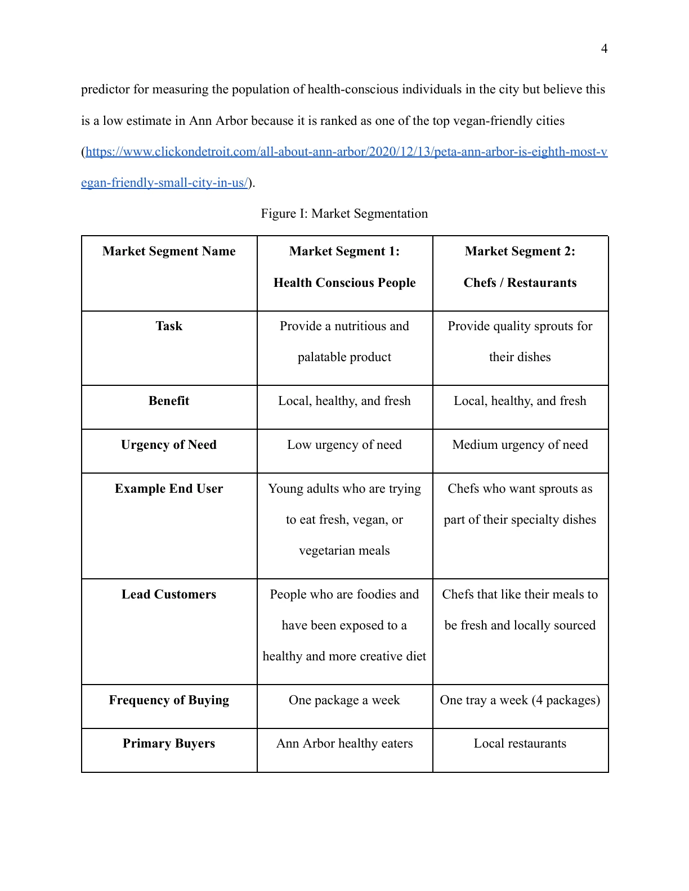
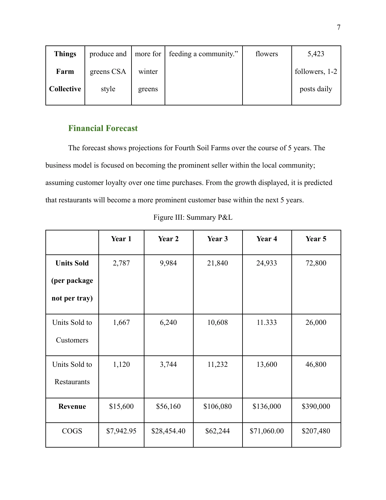
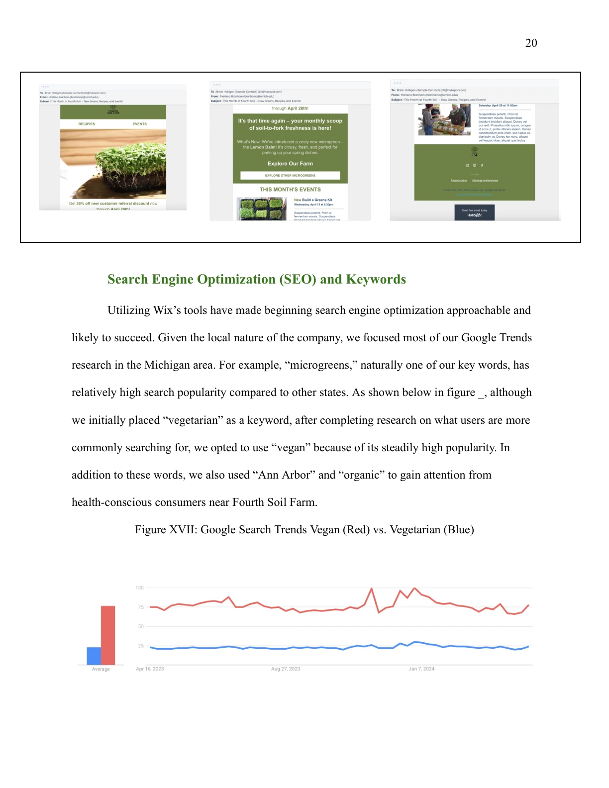
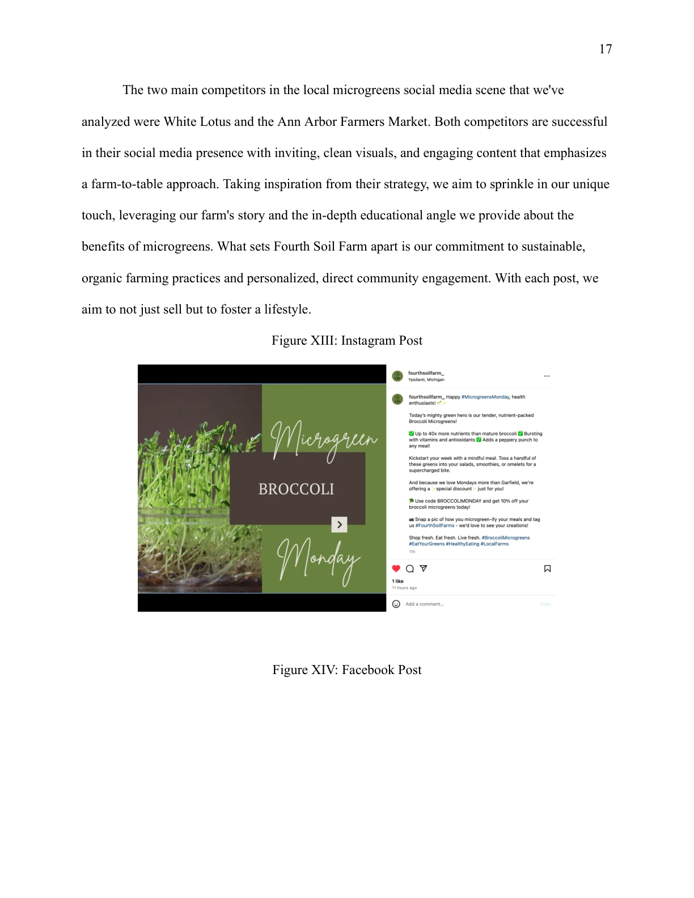
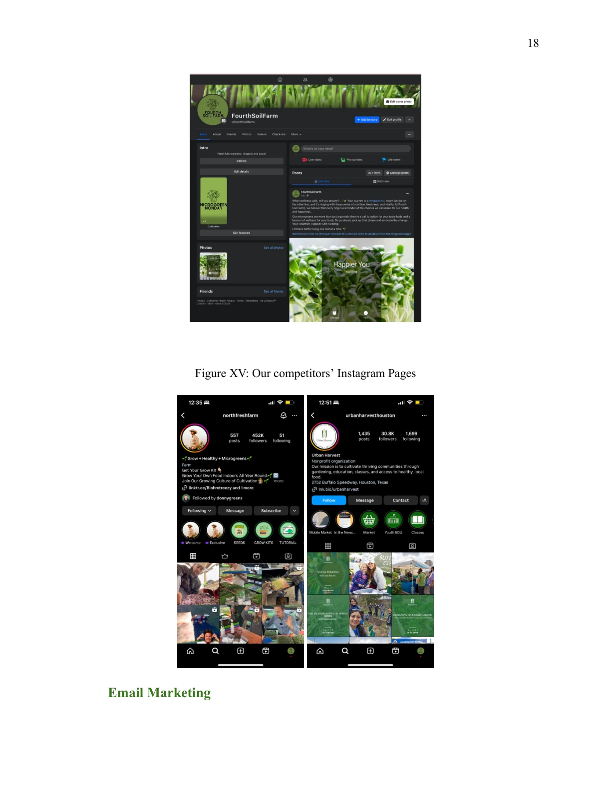
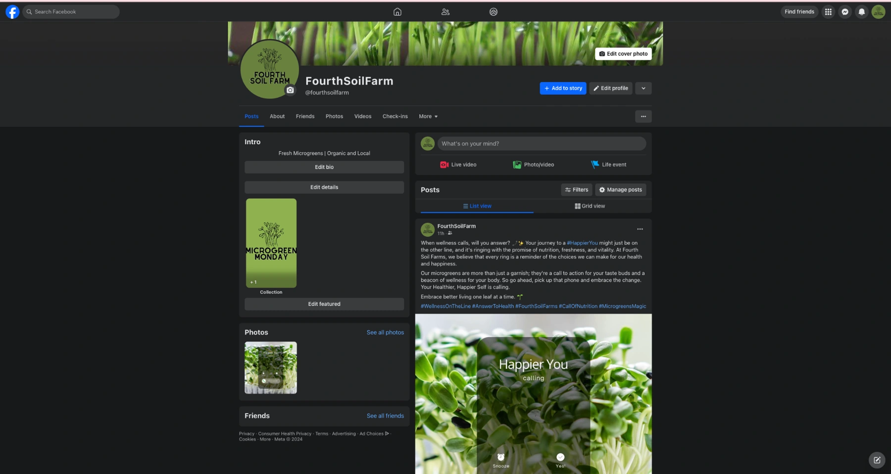
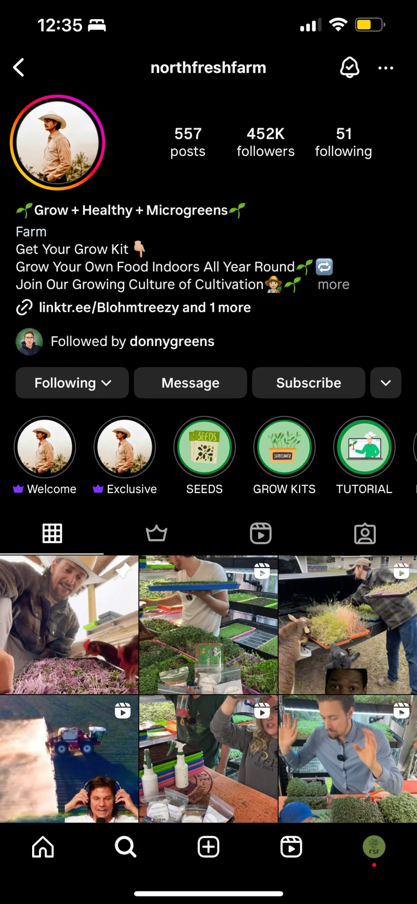
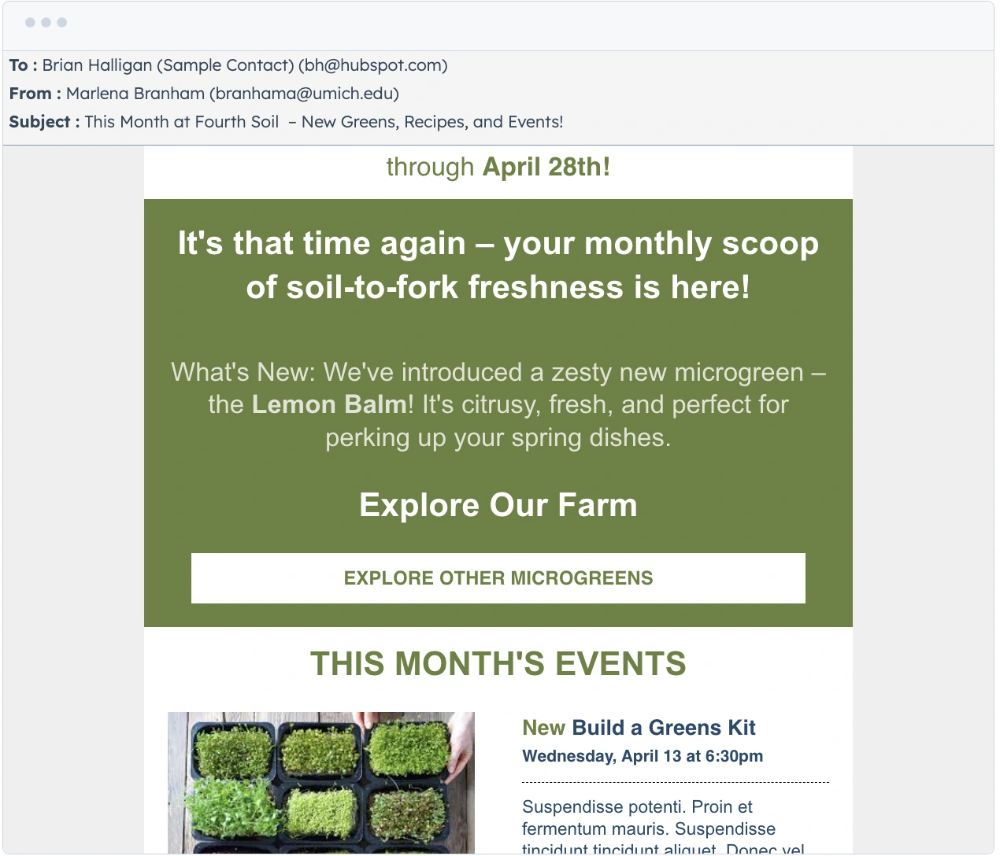
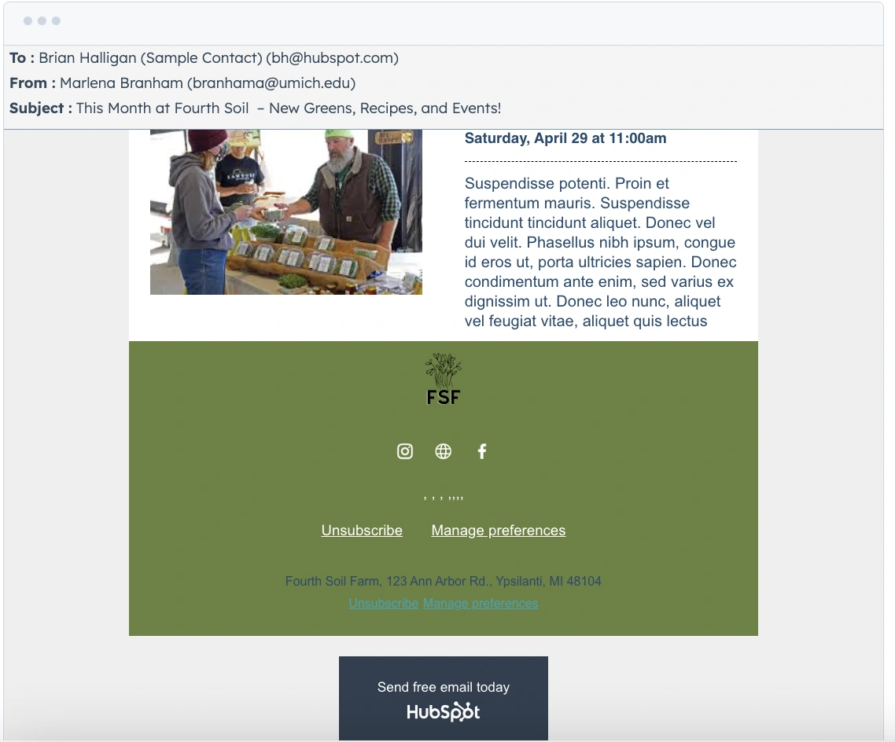
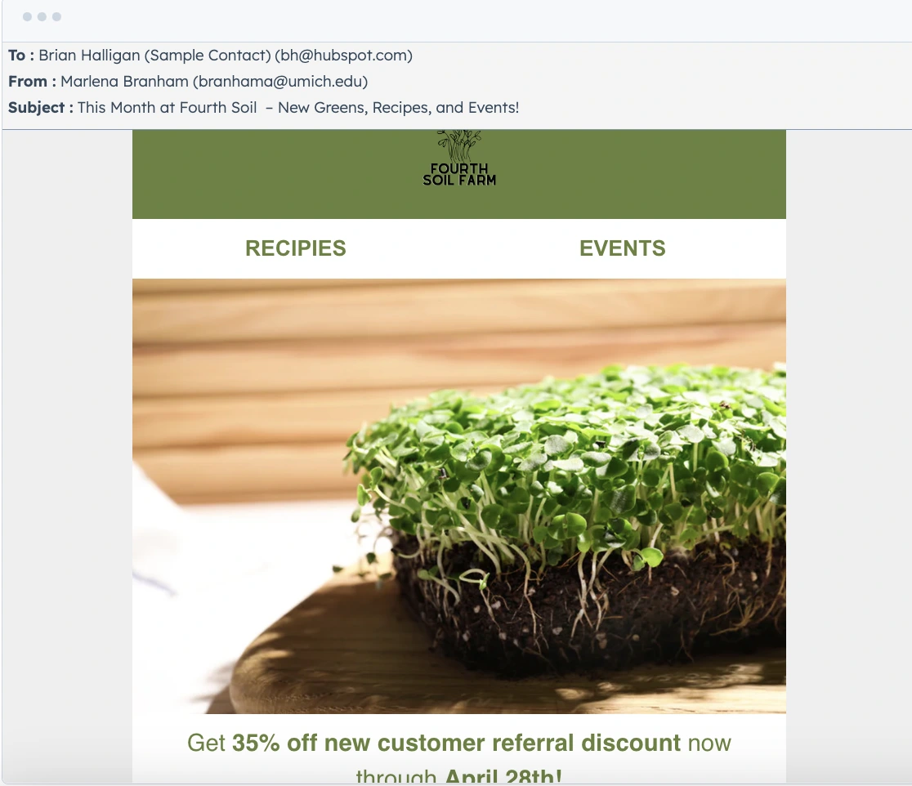

Individual customers
Local consumers interested in fresh produce and practical ways to include microgreens in meals.
Fourth Soil Farm needed a clearer path toward online sales. I connected customer segmentation, a five-year financial forecast, website recommendations, content strategy, email capture, and social / SEO planning into one growth model.
4 min read · Original project artifacts

Fourth Soil Farm is a local microgreens business serving the Ann Arbor area, with growing operations in nearby Ypsilanti. Our 2024 project focused on four varieties—broccoli, sunflower, pea, and crunchy mix—and a direct-to-community model centered on freshness and local delivery.
The growth opportunity involved two different buying situations: an individual adding microgreens to meals and a restaurant purchasing ingredients repeatedly for its menu. Our team developed an e-commerce and marketing strategy that addressed both, supported by a five-year financial model.
I worked with Tina Chao, Amelia Gifford, Tessa Scully, and Tina Tran on the ENTR 390 project. The combined deliverables covered market segmentation, competitor analysis, financial forecasting, product and fulfillment information, website strategy, social content, email marketing, and search visibility.
My contribution connected business strategy with the customer-facing experience. The work required us to explain who should buy, why the offer mattered, how someone could place an order, and what ongoing communication could encourage repeat purchasing. The report and campaign examples shown here are team deliverables.
A local food business cannot pursue growth independently of fulfillment. New demand must fit the harvest cycle, delivery area, product quantity, and customer expectations. The strategy therefore needed to connect the promise of freshness with practical purchasing and delivery information.
We also needed to avoid treating households and restaurants as the same segment. An individual package purchase and a recurring restaurant order create different requirements for messaging, order size, pricing, and outreach.
Local consumers interested in fresh produce and practical ways to include microgreens in meals.
Repeat buyers evaluating quality, quantity, consistency, and suitability for their dishes.
A small team balancing production, customer acquisition, delivery, and repeat relationships.
Our segmentation compared customers’ needs, buying frequency, typical order size, and likely partners. The project used planning estimates of more than 18,000 vegetarian/vegan-aligned consumers and 400 local restaurants to frame the opportunity. These were market-sizing assumptions, not a verified customer list.
We reviewed local alternatives including White Lotus Farms, Green Things Farm Collective, Argus Farm Stop, and the Ann Arbor Farmers Market. The analysis considered product focus, pricing, online presence, and community visibility to understand how Fourth Soil could differentiate its microgreen specialization.
The five-year forecast separated consumer and restaurant revenue and modeled costs such as growing inputs, packaging, delivery, and labor. It also considered acquisition and customer lifetime value.
The modeled mix moved from 36% restaurant revenue in Year 1 to 60% in Year 5. That shift made restaurant relationships strategically important, but the model remained conditional on repeat orders, acquisition, production capacity, and the ability to maintain fulfillment costs.
The team’s Wix approach organized the experience around Home, Our Vision, Shop, Blog, and Contact. The home page introduced the product and directed people toward ordering; the shop clarified product varieties, quantities, and prices.
The other pages had distinct jobs. Founder and harvesting information helped explain the business; the blog supported recipes and education; and contact information provided a route for questions. The aim was to make the website useful at several stages of the customer relationship, not only at checkout.
The marketing approach used Instagram for visual product storytelling and Facebook for community-oriented communication. The “Microgreen Monday” example introduced a product through a repeatable educational format.
The HubSpot email approach included a welcome series, newsletters, product information, recipes, local events, and clear calls to action. It connected useful content with a route back to the shop. Search research used Michigan-focused Google Trends comparisons and informed keyword choices such as vegan, organic, microgreens, and Ann Arbor.
Our recommendations connected the type of customer with a different buying journey and a different business implication.
| What mattered | The response | Why it mattered |
|---|---|---|
| Households and restaurants purchased at different quantities and frequencies. | Segment the offer and outreach rather than using one generic message. | Align communication with the buying situation. |
| Freshness was part of the product’s value. | Explain harvesting, product quantities, and local fulfillment. | Make the promise understandable before ordering. |
| The model depended increasingly on restaurant revenue. | Include targeted commercial outreach and relationship-building. | Connect marketing effort to the projected customer mix. |
| Customers needed reasons to return beyond a single transaction. | Develop recipes, educational posts, and recurring email content. | Support continued engagement and repeat-purchase opportunities. |
The original report pages and campaign examples show how market segmentation, financial planning, product storytelling, and email strategy were brought together.










The project delivered an integrated business and e-commerce strategy, a five-year financial model, website content structure, and social and email examples. The important result was the connection between the audience strategy, buying experience, and operating assumptions.
The forecast projected revenue from $15,600 in Year 1 to $390,000 in Year 5, with restaurants contributing 60% of modeled Year-5 revenue. These figures describe a planning scenario, not revenue the project achieved. The report did not include a post-launch conversion or retention study.
| Revenue segment | Year 1 | Year 5 |
|---|---|---|
| Consumers | $10,000 | $156,000 |
| Restaurants | $5,600 | $234,000 |
| Total | $15,600 | $390,000 |
This project made the relationship between marketing and operations concrete. More visibility is only useful when the offer, purchase path, and delivery model can support the demand it creates.
I would carry forward the habit of making model assumptions visible. A forecast becomes a better decision tool when a client can see which customer segment, purchase frequency, or cost assumption is responsible for the outcome.
{kind=link}
{kind=link}
{kind=link}
{kind=link}
{kind=link}
{kind=link}
{kind=link}
{kind=link}
{kind=link}
{kind=link}